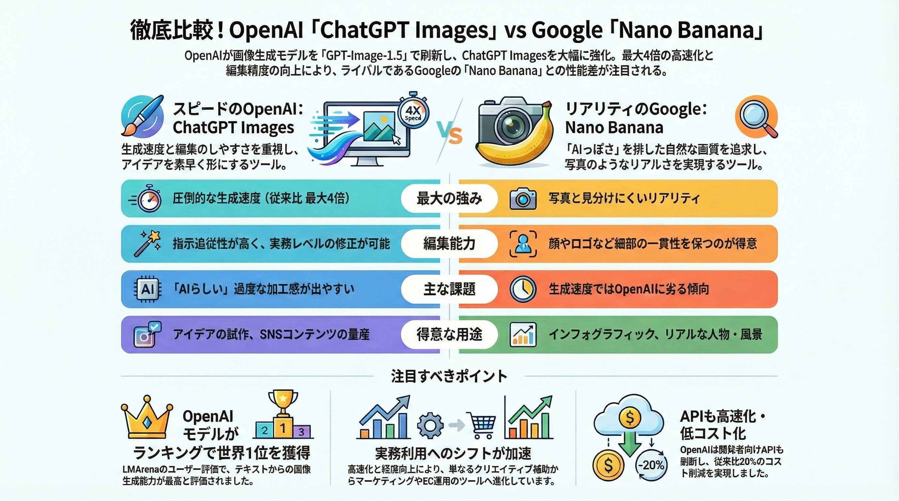

ChatGPT Images
画像生成AIの新時代：ビジネスツールへの進化
OpenAIは、新旗艦モデル「GPT-Image-1.5」を搭載した「ChatGPT Images」をリリースしました。最大4倍の高速化とビジネス利用に特化した機能強化により、画像生成AIは技術デモの段階を超え、実用的なプロダクションツールとしての地位を確立しようとしています。
機能強化と競合比較
⚡ ChatGPT Imagesの核心的な強化点
- 1 最大4倍の高速化: クリエイティブな試行錯誤のサイクルを劇的に短縮し、反復可能な業務プロセスへ。
- 2 指示追従性と編集精度の向上: 人物の顔やロゴなど、一貫性が求められるディテールを維持しながら精密に編集可能。
- 3 専用UI「Images」: プリセットスタイルやトレンドプロンプトを備え、専門知識不要で高品質なビジュアルを作成可能。
ChatGPT Images (OpenAI)
- 強み: 圧倒的な生成速度、効率性、手軽さ
- 最適用途: アイデア出し、SNS投稿、プロトタイピング
- 評価: LMArenaベンチマークで1位（指示追従性）
Nano Banana (Google)
- 強み: 写真のようなリアリズム、AIっぽさの少なさ
- 最適用途: 最終ビジュアル制作、高品質資料、写真
- 評価: ユーザーコミュニティで画質・質感を高く評価